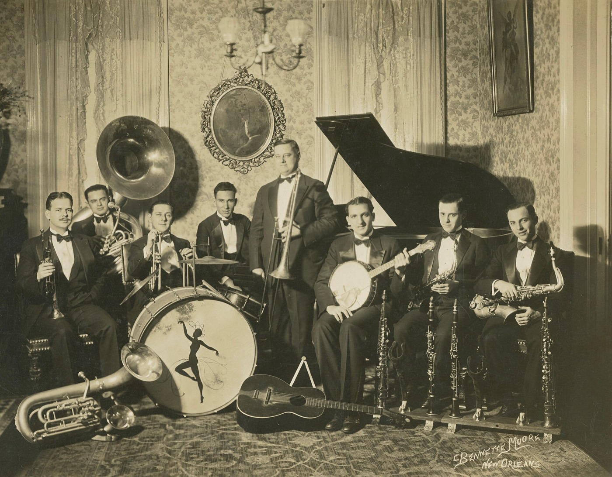

Inden festen
Middagen er for nogle af dem, vi står tættest på, og vi vil rigtig gerne have dig med.
Kom kl. 17. Aftenens vært tager imod dig ved den røde løber med en velkomstdrink, og der bliver taget billeder, når du ankommer. Vi kommer selv til sidst, når alle er samlet.

Velkomstdrinken står klar fra kl. 17.

Middagen

Godt at vide til middagen

Skal jeg sige, at jeg kommer?
Ja. Skriv til Sam eller Tristan senest 1. juli 2027, så vi ved, hvor mange vi skal dække op til.
Jeg spiser ikke alt. Hvad gør jeg?
Skriv det til os, når du svarer. Der bliver noget til alle, også hvis du ikke spiser kød eller har en allergi.
Hvem er aftenens vært?
En af vores gode venner. Han tager imod dig, holder styr på aftenen og ved, hvornår vi kommer. Mere afslører vi ikke.
Må jeg fortælle andre om middagen?
Vi holder den helst lille. De fleste gæster kommer kl. 21, så lad os holde middagen mellem os.
Hvad hvis jeg bliver forsinket?
Prøv at være der senest kl. 17.45. Bliver du forsinket alligevel, så skriv til aftenens vært eller en af os.
Skal jeg have en gave med?
Nej. Kom i fint tøj og godt humør. Vil du alligevel have noget med, er en flaske altid velkommen i baren.